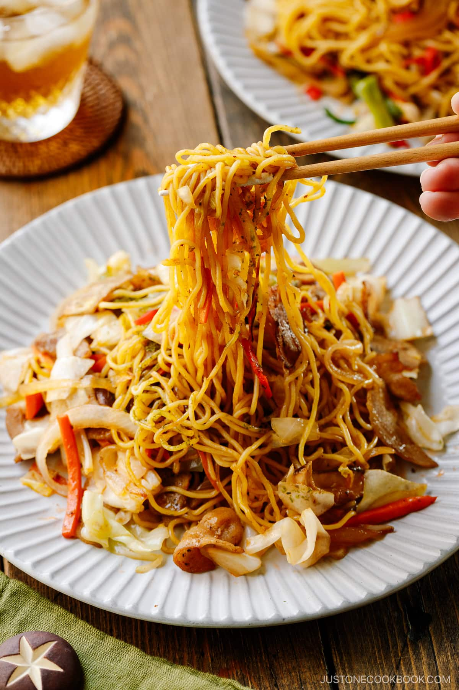

Home
Yakisoba

Yakisoba is a stir-fried noodle dish that typically includes meat or seafood,
as well as vegetables such as cabbage, carrots, onions, and bean sprouts.
These ingredients are all cooked together in a thick, sweet-savory sauce,
and the final dish is usually topped with aonori (dried green seaweed)
and red pickled ginger for added flavor.
Ingredients
- Yakisoba noodles
- Vegetables
- Protein(s)
- Oil
- Yakisoba Sauce
Cooking Steps
- Cut the ingredients into bite-size pieces.
- Warm up the noodles and transfer them to a dish.
- Cook the protein, followed by the tough vegetables, and then the soft vegetables.
- Put back the noodles and season them with Yakisoba Sauce.
- Toss them all together and serve.